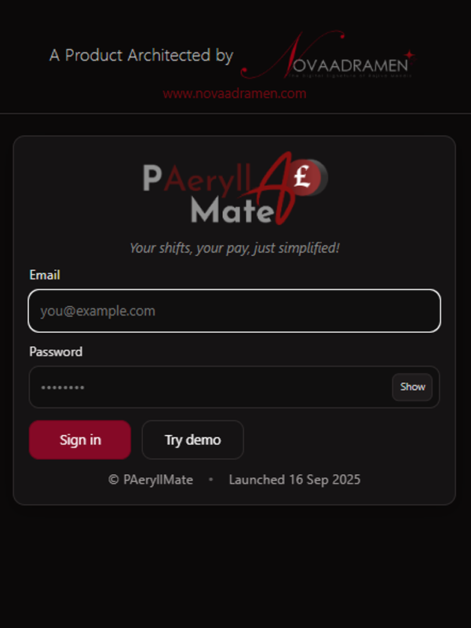
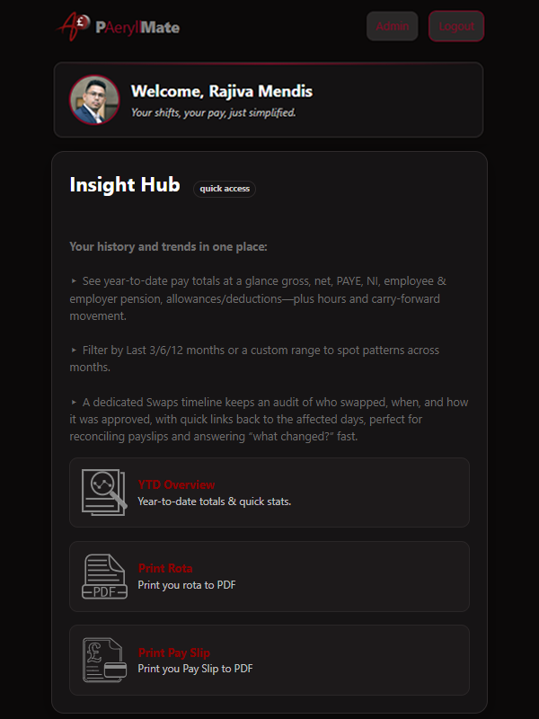
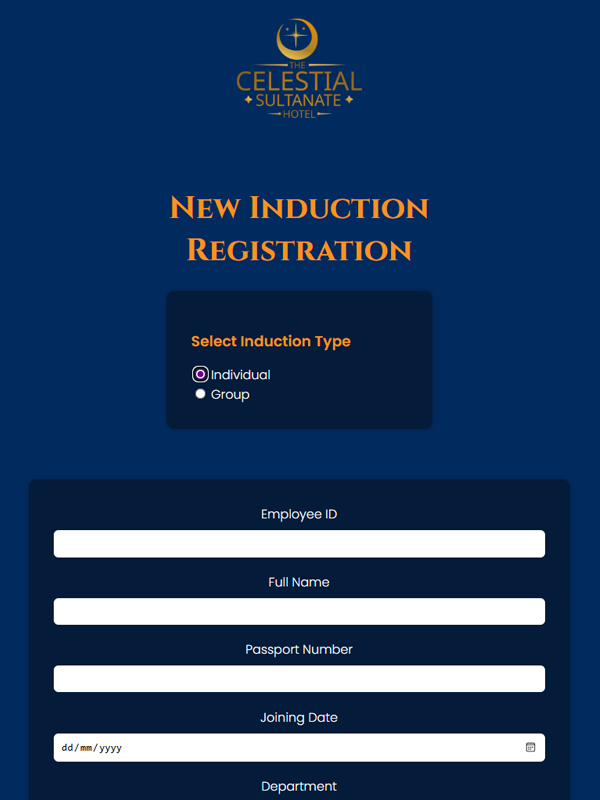
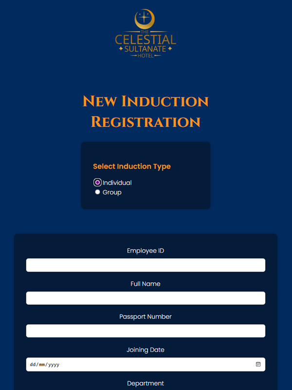
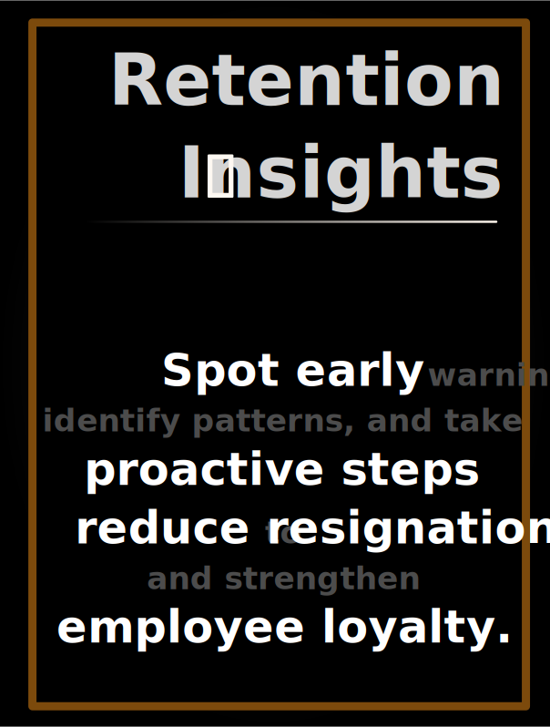
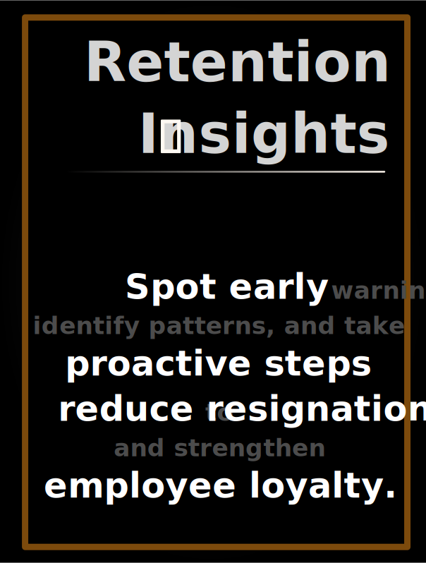

About Me
Hi, I'm Raj.
But most people know me as someone who wears many hats with one heart.
From high-pressure HR boardrooms at City Seasons Al Hamra Hotel and Royal Rose Hotel (Hilton-affiliated) in Abu Dhabi, to creating inclusive onboarding experiences that actually matter, I’ve always believed work should feel like purpose, not punishment. I’ve wrestled with that belief and have always chosen to be the one who steps forward to fix what’s broken.
Whether it was designing fair policies, implementing SOPs, or crafting foolproof workplace systems, I’ve poured my energy into making the workplace a better, safer, more human environment. My greatest joy? Training people from scratch and watching them grow! not just professionally, but personally too.
Born in Colombo, shaped by the UAE, and now calling the UK home, my journey hasn’t been linear, it’s been layered. I started in banking, found my calling in HR, and now I’m diving deep into Data Analytics and Python, blending tech with empathy to build smarter and kinder workplaces.
I’m not a top graduate in computer science. I’m a self-made system builder with perseverance stitched into my DNA. I don’t claim to be a legacy. I’m still in the making.
This site is my canvas, a place to showcase not just my projects, but my transformation.
Beyond the résumé, I’m a storyteller, a spiritual seeker, and someone who still believes in loyalty, handwritten notes, and systems that serve people, not the other way around.
Want to know the real me?
Head over to Explore My World, where I’ve shared everything from singing dreams to system builds.
Thank you for being here and taking your precious time.
Organizations I've Served
HSBC
Sri Lanka
Banking Assistant

Pan Asia Bank
Sri Lanka
Service Quality Officer
Royal Rose Hotel
Abu Dhabi, UAE
DTS Agent
to
HR Coordinator

City Seasons Al Hamra
Abu Dhabi, UAE
HR Executive
to
Asst. HR Manager
Asian Mirror
Sri Lanka
Media Coordinator
by

 PAeryllMate
PAeryllMate
Your shifts, your pay, just simplified.




PaeryllMate is a prototype rota-driven payroll tool, originally tailored for a real-world case but engineered to be future-proof.
With only minor adjustments, it can be adapted to any shift-based workplace, streamlining pay calculations and reducing HR errors.
Click below to learn more.
 SultanGate
SultanGate
Virtual HR Induction Portal
üöß In the making...

 


A digital onboarding portal tailored for the luxury hospitality sector.
Built as a prototype for The Celestial Sultanate Hotel, this system delivers personalized video inductions, HR-led onboarding sessions, and automated quiz tracking all from one sleek dashboard.
Click below to learn more.
 ExitGATE
ExitGATE
Virtual Exit Interview Portal
üöß Proposed...

 


A digital exit interview and analytics platform tailored for the hospitality sector.
Built as a prototype for The Celestial Sultanate Hotel, this system collects confidential responses from resigned or terminated staff and visualizes the reasons behind exits through a dedicated dashboard.
It empowers management to measure staff turnover trends and take proactive steps toward retention and workplace improvement.
Click below to learn more.
 PoliSense AI
PoliSense AI
Smart AI Assistant for Policy-Based HR Reasoning
üí° Concept in Development
A visionary AI-powered assistant designed to interpret HR policies, labor laws, and global compliance frameworks.
Proposed as a virtual support tool for HR Managers in the hospitality sector, PoliSense aims to proactively identify workplace concerns, suggest appropriate responses, and guide Managers through legally sound, culturally aligned decision-making steps.
*This is a conceptual tool in early planning. Development will begin following completion of core HR systems.
Contact
Email: rajiva.mendis@novaadramen.com
LinkedIn: linkedin.com/in/rajiva-mendis
GitHub: github.com/NovaAdramen